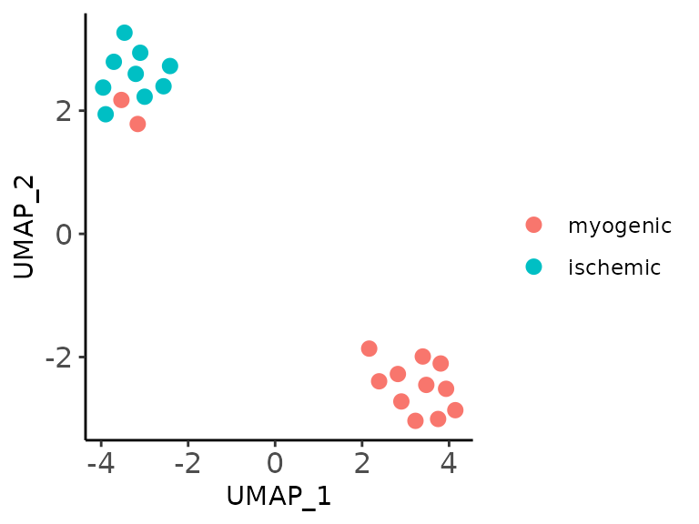
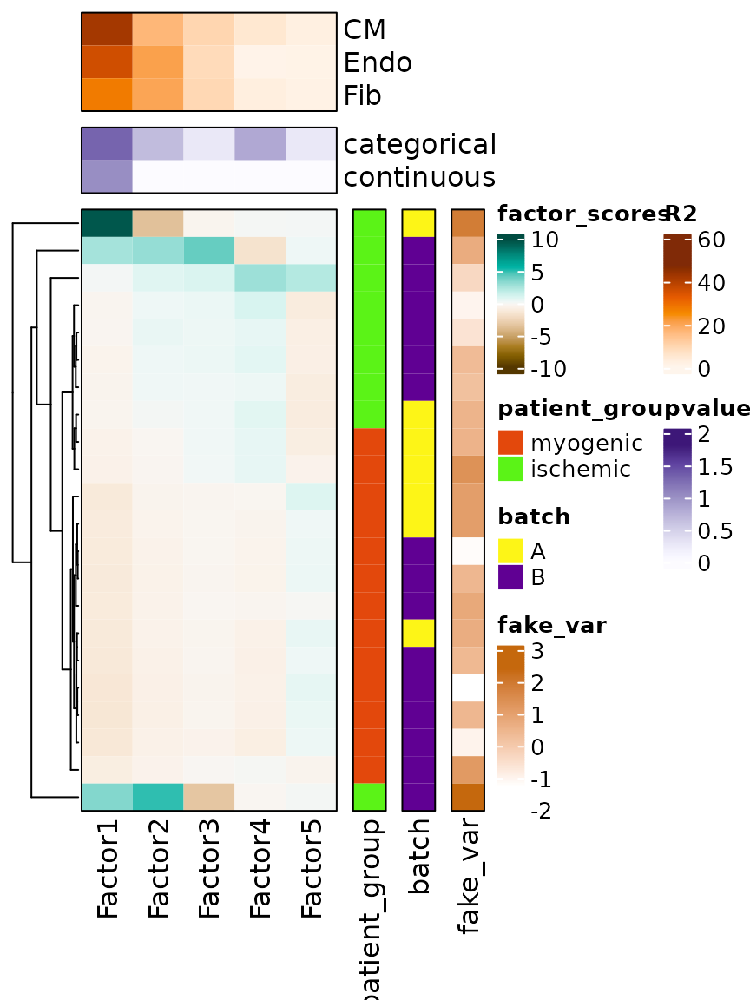

Running a multicellular factor analysis in a cross-condition single-cell atlas
get-started.RmdMulticellular factor analysis
We repurposed the statistical framework of multi-omics factor analysis (MOFA) and MOFA+ to analyze cross-condition single cell atlases. These atlases profile molecular readouts (eg. gene expression) of individual cells per sample that can be classified into groups based on lineage (cell types) or functions (cell states). We assumed that this nested design could be represented as a multi-view dataset of a collection of patients, where each individual view contains the summarized information of all the features of a cell type per patient (eg. pseudobulk). In this data representation there can be as many views as cell types in the original atlas. MOFA then is used to estimate a latent space that captures the variability of patients across the distinct cell types. The estimated factors composing the latent space can be interpreted as a multicellular program that captures coordinated expression patterns of distinct cell types. The cell type specific gene expression patterns can be retrieved from the factor loadings, where each gene of each cell type would contain a weight that contributes to the factor score. Similarly, as in the application of MOFA to multiomics data, the factors can be used for an unsupervised analysis of samples or can be associated to biological or technical covariates of the original samples. Additionally, the reconstruction errors per view and factor can be used to prioritize cell types associated with covariates of interest.
Data
Here we show how to use MOFA for a multicellular factor analysis by applying it to a cross-condition atlas.
As an example, we will use a toy dataset containing the pseudobulk gene expression information of 22 samples across 3 cell types
inputs_dir <- base::system.file("extdata", package = "MOFAcellulaR")
load(file.path(inputs_dir, "testpbcounts.rda"))
load(file.path(inputs_dir, "testcoldata.rda"))1. Processing pseudobulk expression profiles
We will assume that regardless of the preferred way of storing your pseudobulk data, a count matrix (genes in rows, samples in columns) will be accompanied by the annotations of the columns that contain the information of the cell type and sample of origin of the pseudobulk expression vector.
If you are starting from a single cell data set, we recommend you to
use functions like scuttle::summarizeAssayByGroup() to
generate objects as the ones used in this vignette.
In the example data testpbcounts contains a expression
matrix.
testpbcounts[1:5,1:5]
#> CM_control_P1 Endo_control_P1 Fib_control_P1 CM_control_P17
#> AL627309.1 0 0 0 0
#> AL627309.5 0 0 0 0
#> AL627309.4 0 0 0 0
#> AL669831.2 0 0 0 0
#> LINC01409 1 1 1 1
#> Endo_control_P17
#> AL627309.1 0
#> AL627309.5 0
#> AL627309.4 0
#> AL669831.2 0
#> LINC01409 0And testcoldata contains the information of each sample
(column) of testpbcounts in a named
data.frame.
testcoldata %>%
head()
#> donor_id cell_type cell_counts
#> CM_control_P1 control_P1 CM 10
#> Endo_control_P1 control_P1 Endo 10
#> Fib_control_P1 control_P1 Fib 10
#> CM_control_P17 control_P17 CM 10
#> Endo_control_P17 control_P17 Endo 10
#> Fib_control_P17 control_P17 Fib 10The necessary components of testcoldata are the
donor_id column that refers to the sample of interest (eg.
patient), cell_type that will define the views in our
multicellular factor analysis, and cell_counts that will
allow to perform quality control filtering.
MOFAcellulaR provides a series of useful tools to go
from these two data objects to a MOFA ready dataframe that we be used to
performed group factor analysis.
First, we create an initial SummarizedExperiment object
that will allow to make all the processing.
pb_obj <- MOFAcellulaR::create_init_exp(counts = testpbcounts, coldata = testcoldata)Then, we will create a list of SummarizedExperiment of
samples and cell-types of interest.
An initial quality control step is to filter out pseudobulk samples coming from a low number of cells, under the assumption that the gene count estimates coming from a small population of cells may be unreliable. The actual number of cells needed for a pseudobulk profile is arbitrary and it is an empirical decision of the analyzer. If no sample filtering is required, it is possible also to define that in the helping functions.
In this example we only work with cardiomyocytes (CM) and fibroblasts (Fib)
ct_list <- MOFAcellulaR::filt_profiles(pb_dat = pb_obj,
cts = c("Fib","CM"),
ncells = 0,
counts_col = "cell_counts", # This refers to the column name in testcoldata where the number of cells per profile was stored
ct_col = "cell_type") # This refers to the column name in testcoldata where the cell-type label was storedThe next step, requires to identify lowly expressed genes and highly
variable genes per cell-type independently. We reuse the same criteria
as edgeR to identify lowly expressed genes. Similarly as
the number of cells, this parameters should be decided by the
analyst.
ct_list <- MOFAcellulaR::filt_gex_byexpr(pb_dat_list = ct_list,
min.count = 5, # Modify!!
min.prop = 0.25) # Modify!!
#> Warning in filterByExpr.DGEList(y, design = design, group = group, lib.size =
#> lib.size, : All samples appear to belong to the same group.
#> Warning in filterByExpr.DGEList(y, design = design, group = group, lib.size =
#> lib.size, : All samples appear to belong to the same group.Since we override the group parameter, all samples are assumed to be of the same group.
Normalization of pseudobulk expression profiles using Trimmed Mean of
the M-values (TMM) from edgeR::calcNormFactors is then
performed
ct_list <- MOFAcellulaR::tmm_trns(pb_dat_list = ct_list,
scale_factor = 1000000)Identification of highly variable genes per cell type is performed
with scran::getTopHVGs(), however you can also provide your
own list of highly variable genes if preferred
ct_list <- MOFAcellulaR::filt_gex_byhvg(pb_dat_list = ct_list,
prior_hvg = NULL,
var.threshold = 0)Finally, it is possible to veto genes to be part of the model for specific cell-types. The way we deal with this is to create a dictionary of exclusive genes for a given cell-type. These could be for example marker genes.
In this vignette, we will explicitly make TTN a gene exclusive for cardiomyocytes, and POSTN exclusive to fibroblasts based on prior knowledge, avoiding these to be background genes for other cell types.
prior_hvg_test <- list("CM" = c("TTN"),
"Fib" = c("POSTN"))
ct_list <- MOFAcellulaR::filt_gex_bybckgrnd(pb_dat_list = ct_list,
prior_mrks = prior_hvg_test)To convert the cell-type list into a MOFA ready object we just run the following line
multiview_dat <- pb_dat2MOFA(pb_dat_list = ct_list)All the previous steps can be concatenated using %>%
for your convenience
multiview_dat <- MOFAcellulaR::create_init_exp(counts = testpbcounts,
coldata = testcoldata) %>%
MOFAcellulaR::filt_profiles(pb_dat = .,
cts = c("Fib","CM", "Endo"),
ncells = 0,
counts_col = "cell_counts", # This refers to the column name in testcoldata where the number of cells per profile was stored
ct_col = "cell_type") %>%
MOFAcellulaR::filt_gex_byexpr(pb_dat_list = .,
min.count = 5,
min.prop = 0.25) %>%
MOFAcellulaR::tmm_trns(pb_dat_list = .,
scale_factor = 1000000) %>%
MOFAcellulaR::filt_gex_byhvg(pb_dat_list = .,
prior_hvg = NULL,
var.threshold = 0) %>%
MOFAcellulaR::filt_gex_bybckgrnd(pb_dat_list = .,
prior_mrks = prior_hvg_test) %>%
MOFAcellulaR::pb_dat2MOFA(pb_dat_list = .)2. Fitting a MOFA model
Once the single cell data is transformed into a multi-view representation, now we can use MOFA to run a multicellular factor analysis.
We will try to identify 6 factors that explain the variability between patients captured by the seven different cell-types.
MOFA self-regularizes and will indicate a potential optimal number of factors useful to describe the variability of your data, we advise to follow the indications of MOFA
Every factor captures coordination of gene expression across cell types and will be called multicellular gene factors for the rest of the vignette.
It is important to clarify what these factors capture:
- Coordinated expression of identical genes (generalistic response) across cell-types
- Coordinated expression of different genes (cell-type specific response) across cell-types
Fitting the model should take seconds.
MOFAobject <- MOFA2::create_mofa(multiview_dat)
data_opts <- MOFA2::get_default_data_options(MOFAobject)
train_opts <- MOFA2::get_default_training_options(MOFAobject)
model_opts <- MOFA2::get_default_model_options(MOFAobject)
# This avoids the regularization of multicellular programs per cell type.
# This avoids less sparse gene weights
model_opts$spikeslab_weights <- FALSE
# Define the number of factors needed
model_opts$num_factors <- 5
# Prepare MOFA model:
MOFAobject <- MOFA2::prepare_mofa(object = MOFAobject,
data_options = data_opts,
model_options = model_opts,
training_options = train_opts)
outfile <- file.path("./vignettemodel.hdf5")
model <- MOFA2::run_mofa(MOFAobject, outfile)#> Warning in .quality_control(object, verbose = verbose): Factor(s) 1 are strongly correlated with the total number of expressed features for at least one of your omics. Such factors appear when there are differences in the total 'levels' between your samples, *sometimes* because of poor normalisation in the preprocessing steps.3. Exploring the MOFA model
Exporting model outputs
For convenience, we provide functions to explore the results of your model complementary to the ones already provided by MOFA documentation.
These functions are based on the idea that users will have extra information regarding the samples they analyzed. We provide supplemental annotations of the toy object.
metadata <- readRDS(file.path(inputs_dir, "testmetadata.rds"))
head(metadata)
#> sample patient_group batch
#> 1 control_P1 myogenic A
#> 31 RZ/FZ_P5 myogenic A
#> 61 RZ/BZ_P3 myogenic A
#> 91 IZ_P3 ischemic A
#> 121 RZ/BZ_P2 myogenic A
#> 151 RZ_P3 myogenic AOur sample meta data can also contain continous measurements if
needed, for example a clinical variable fake_var
You can obtain the factor scores of each of your samples by calling the next function
all_factors <- MOFAcellulaR::get_tidy_factors(model = model,
metadata = metadata,
factor = "all",
sample_id_column = "sample")
head(all_factors)
#> # A tibble: 6 × 6
#> sample patient_group batch fake_var Factor value
#> <chr> <fct> <chr> <dbl> <chr> <dbl>
#> 1 control_P1 myogenic A 0.687 Factor1 -1.17
#> 2 control_P1 myogenic A 0.687 Factor2 -0.519
#> 3 control_P1 myogenic A 0.687 Factor3 -0.331
#> 4 control_P1 myogenic A 0.687 Factor4 -0.612
#> 5 control_P1 myogenic A 0.687 Factor5 0.465
#> 6 control_P17 myogenic B -1.29 Factor1 -1.33You can specify also which factor you are interested and perform any type of statistical analysis of interest
Factor3 <- MOFAcellulaR::get_tidy_factors(model = model,
metadata = metadata,
factor = "Factor3",
sample_id_column = "sample")
head(Factor3)
#> # A tibble: 6 × 6
#> sample patient_group batch fake_var Factor value
#> <chr> <fct> <chr> <dbl> <chr> <dbl>
#> 1 control_P1 myogenic A 0.687 Factor3 -0.331
#> 2 control_P17 myogenic B -1.29 Factor3 -0.367
#> 3 control_P7 myogenic B 1.17 Factor3 -0.151
#> 4 control_P8 myogenic B 0.793 Factor3 -0.206
#> 5 GT/IZ_P13 ischemic B -0.354 Factor3 0.972
#> 6 GT/IZ_P15 ischemic B -1.02 Factor3 0.363Each factor is composed by a linear combination of genes per cell-type, and it is possible to extract the weights for each factor with a practical function
gene_weights <- MOFAcellulaR::get_geneweights(model = model, factor = "Factor1")
head(gene_weights)
#> feature value ctype
#> 1 TTTY14 -0.07195983 CM
#> 2 TTN-AS1 -0.69494200 CM
#> 3 SLC8A1-AS1 -0.31866250 CM
#> 4 LRRTM3 -0.63194725 CM
#> 5 MLIP-AS1 -0.54372348 CM
#> 6 LINC02208 -0.82502754 CMThese gene loadings are essential if you want to map cell-type specific processes to bulk and spatial transcriptomics, since they can be treated as gene sets. If you are interested in this, we refer to decoupleR and decoupler-py that explain in detail how to perform enrichment analysis with this type of weighted gene sets.
Alternatively, the gene loadings can be reduced to functional or cellular processes by enriching gene sets provided by literature in each cell-type specific signature. Treat your gene loading matrix as scaled transcriptomics and perform your enrichment test of preference, see decoupleR’s documentation for this.
Visualizing sample variability
As an initial exploratory analysis, one may want to visualize samples in a 2D space, here we provide a plotting function that allows to perform this using UMAPs or multidimensional-scaling plots.
UMAP_embedding <- MOFAcellulaR::plot_sample_2D(model = model,
method = "UMAP",
metadata = metadata,
sample_id_column = "sample",
color_by = "patient_group")
Performing statistical analyses
To facilitate the exploration of the model, we provide a wrapper that performs association tests between factor scores and covariates of the samples, the covariates can be continuous or categorical. In the case of continuous variables a linear model is fitted. For categorical variables, analysis of variance (ANOVA) is performed.
categorical_assoc <- MOFAcellulaR::get_associations(model = model,
metadata = metadata,
sample_id_column = "sample",
test_variable = "patient_group",
test_type = "categorical",
group = FALSE)
categorical_assoc
#> # A tibble: 5 × 4
#> Factor term p.value adj_pvalue
#> <chr> <chr> <dbl> <dbl>
#> 1 Factor1 patient_group 0.00960 0.0480
#> 2 Factor2 patient_group 0.0720 0.216
#> 3 Factor3 patient_group 0.315 0.547
#> 4 Factor4 patient_group 0.0379 0.152
#> 5 Factor5 patient_group 0.274 0.547
continuous_assoc <- MOFAcellulaR::get_associations(model = model,
metadata = metadata,
sample_id_column = "sample",
test_variable = "fake_var",
test_type = "continuous",
group = FALSE)
continuous_assoc
#> # A tibble: 5 × 4
#> Factor term p.value adj_pvalue
#> <chr> <chr> <dbl> <dbl>
#> 1 Factor1 fake_var 0.0189 0.0945
#> 2 Factor2 fake_var 0.455 1
#> 3 Factor3 fake_var 0.254 1
#> 4 Factor4 fake_var 0.561 1
#> 5 Factor5 fake_var 0.825 1Visualizing the complete model
With MOFA you are able to interpret your model in distinct ways:
First it reduces the variability of samples across cell-types inferring a latent space. See
MOFAcellulaR::get_tidy_factorsThe latent space captures certain percentage of the variability of the original data, in this case the variability of samples within a single cell-type. A full exploration of the model can be done using:
model@cache$variance_explained$r2_total
#> $single_group
#> CM Endo Fib
#> 76.75793 67.30179 61.72416- Each latent variable contributes in explaining the variability of the original data and that can also be used to prioritize signals.
model@cache$variance_explained$r2_per_factor$single_group[,,drop = F]
#> CM Endo Fib
#> Factor1 42.440678 36.1886863 27.636917
#> Factor2 16.687453 20.8902217 20.198155
#> Factor3 9.965168 8.5866332 9.443090
#> Factor4 5.140941 0.8256951 2.962209
#> Factor5 2.498294 1.1868970 1.576150For example, in this model, we previously identified Factor1 to be associated with our patient grouping, and based on the explaned variance, we can say that while it represents a multicellular program of the three cell-types we analyzed, Factor1 mainly captures the variability of samples within CMs.
- Each latent variable represents a multicellular program that can be
explored in detail with
MOFAcellulaR::get_geneweights
To visualize the distinct components of the model, we provide a heatmap plotting function that collects the distinct levels of results of the model
assoc_list = list("categorical" = categorical_assoc, "continuous" = continuous_assoc)
plot_MOFA_hmap(model = model,
group = FALSE,
metadata = metadata,
sample_id_column = "sample",
sample_anns = c("patient_group", "batch", "fake_var"),
assoc_list = assoc_list)
utils::sessionInfo()
#> R version 4.2.3 (2023-03-15)
#> Platform: x86_64-pc-linux-gnu (64-bit)
#> Running under: Ubuntu 22.04.2 LTS
#>
#> Matrix products: default
#> BLAS: /usr/lib/x86_64-linux-gnu/openblas-pthread/libblas.so.3
#> LAPACK: /usr/lib/x86_64-linux-gnu/openblas-pthread/libopenblasp-r0.3.20.so
#>
#> locale:
#> [1] LC_CTYPE=C.UTF-8 LC_NUMERIC=C LC_TIME=C.UTF-8
#> [4] LC_COLLATE=C.UTF-8 LC_MONETARY=C.UTF-8 LC_MESSAGES=C.UTF-8
#> [7] LC_PAPER=C.UTF-8 LC_NAME=C LC_ADDRESS=C
#> [10] LC_TELEPHONE=C LC_MEASUREMENT=C.UTF-8 LC_IDENTIFICATION=C
#>
#> attached base packages:
#> [1] grid stats4 stats graphics grDevices utils datasets
#> [8] methods base
#>
#> other attached packages:
#> [1] dplyr_1.1.1 MOFAcellulaR_0.0.0.9000
#> [3] ggplot2_3.4.2 uwot_0.1.14
#> [5] Matrix_1.5-3 circlize_0.4.15
#> [7] ComplexHeatmap_2.14.0 MOFA2_1.8.0
#> [9] SummarizedExperiment_1.28.0 Biobase_2.58.0
#> [11] GenomicRanges_1.50.2 GenomeInfoDb_1.34.9
#> [13] IRanges_2.32.0 S4Vectors_0.36.2
#> [15] BiocGenerics_0.44.0 MatrixGenerics_1.10.0
#> [17] matrixStats_0.63.0
#>
#> loaded via a namespace (and not attached):
#> [1] Rtsne_0.16 colorspace_2.1-0
#> [3] rjson_0.2.21 rprojroot_2.0.3
#> [5] scuttle_1.8.4 bluster_1.8.0
#> [7] XVector_0.38.0 BiocNeighbors_1.16.0
#> [9] GlobalOptions_0.1.2 fs_1.6.1
#> [11] clue_0.3-64 farver_2.1.1
#> [13] ggrepel_0.9.3 fansi_1.0.4
#> [15] codetools_0.2-19 sparseMatrixStats_1.10.0
#> [17] doParallel_1.0.17 cachem_1.0.7
#> [19] knitr_1.42 jsonlite_1.8.4
#> [21] broom_1.0.4 cluster_2.1.4
#> [23] png_0.1-8 pheatmap_1.0.12
#> [25] HDF5Array_1.26.0 compiler_4.2.3
#> [27] dqrng_0.3.0 basilisk_1.10.2
#> [29] backports_1.4.1 fastmap_1.1.1
#> [31] limma_3.54.2 cli_3.6.1
#> [33] BiocSingular_1.14.0 htmltools_0.5.5
#> [35] tools_4.2.3 igraph_1.4.2
#> [37] rsvd_1.0.5 gtable_0.3.3
#> [39] glue_1.6.2 GenomeInfoDbData_1.2.9
#> [41] reshape2_1.4.4 Rcpp_1.0.10
#> [43] jquerylib_0.1.4 pkgdown_2.0.7
#> [45] vctrs_0.6.1 rhdf5filters_1.10.1
#> [47] iterators_1.0.14 DelayedMatrixStats_1.20.0
#> [49] xfun_0.38 stringr_1.5.0
#> [51] beachmat_2.14.2 lifecycle_1.0.3
#> [53] irlba_2.3.5.1 statmod_1.5.0
#> [55] edgeR_3.40.2 zlibbioc_1.44.0
#> [57] scales_1.2.1 basilisk.utils_1.10.0
#> [59] ragg_1.2.5 parallel_4.2.3
#> [61] rhdf5_2.42.1 RColorBrewer_1.1-3
#> [63] SingleCellExperiment_1.20.1 yaml_2.3.7
#> [65] memoise_2.0.1 reticulate_1.28
#> [67] sass_0.4.5 stringi_1.7.12
#> [69] highr_0.10 desc_1.4.2
#> [71] corrplot_0.92 foreach_1.5.2
#> [73] ScaledMatrix_1.6.0 scran_1.26.2
#> [75] filelock_1.0.2 BiocParallel_1.32.6
#> [77] shape_1.4.6 rlang_1.1.0
#> [79] pkgconfig_2.0.3 systemfonts_1.0.4
#> [81] bitops_1.0-7 evaluate_0.20
#> [83] lattice_0.20-45 purrr_1.0.1
#> [85] Rhdf5lib_1.20.0 labeling_0.4.2
#> [87] cowplot_1.1.1 tidyselect_1.2.0
#> [89] plyr_1.8.8 magrittr_2.0.3
#> [91] R6_2.5.1 generics_0.1.3
#> [93] metapod_1.6.0 DelayedArray_0.24.0
#> [95] pillar_1.9.0 withr_2.5.0
#> [97] RCurl_1.98-1.12 tibble_3.2.1
#> [99] dir.expiry_1.6.0 crayon_1.5.2
#> [101] utf8_1.2.3 rmarkdown_2.21
#> [103] GetoptLong_1.0.5 locfit_1.5-9.7
#> [105] FNN_1.1.3.2 forcats_1.0.0
#> [107] digest_0.6.31 tidyr_1.3.0
#> [109] textshaping_0.3.6 munsell_0.5.0
#> [111] bslib_0.4.2